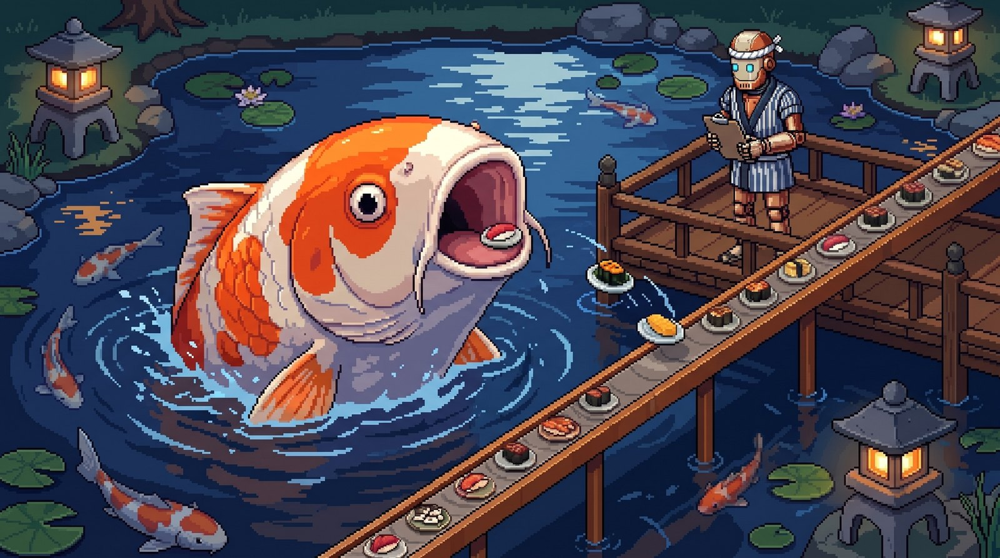

1
The Koi Gulp
The belt juts out over a moonlit pond. A koi the size of a car surfaces and swallows every plate.
On the site: plates slide off the end and splash; the koi burps a bubble every 10th plate. Throw a plate at it and it does a backflip. Leave the footer idle and it winks.
serene · funny